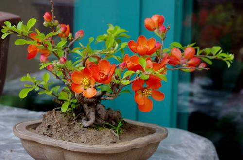
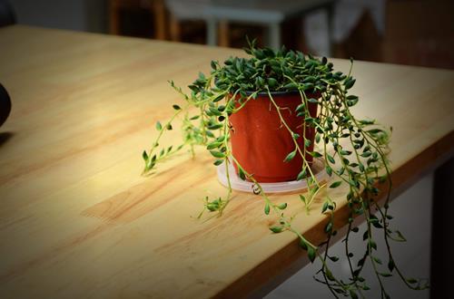
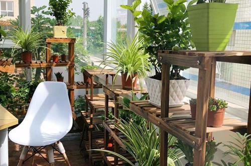

花的九成以上的重量都是由光照决定的，也就是说花的大部分营养都是经过光照合成的，可见光对于花的影响有多大。如果少了光照，那么花的一切运作都将停止，最终面临着死亡。
光照的长短以及强度都对花卉的生长有很大的影响。花卉的开花时间与光照也是息息相关的。
花卉的生长离不开光照，不同的花卉对光照的要求也是不一样的，为了保证花卉能生长的好，要注意调节光照：
正常情况，南面的阳光可以直接照射到室内，所以适合摆放对光需求比较强的花卉，比如：石榴盆栽，夹竹桃盆栽，橡皮树盆栽以及无花果盆栽等等。
北面一般只有早晚才有光照，故而散光比较多，适合养殖耐阴性能比较好的植物，比如：绿萝、龟背竹、豆瓣绿以及常春藤等等。东面一般在太阳升起的早上比较有光照，西窗则在下午比较有光照，故而可以挑选喜欢阴暗或者半阴的植物，比如：山茶花盆栽、杜鹃花盆栽等。
光调节的用法有2种，一种是加光，一种是遮光。
加光：冬天如果光照比较不充足，而花卉对光照需求又比较大的话可以适当的用日光灯或者白炽灯为花卉补光，也就是增加花卉照光时间以及照光强度来帮助花卉更好的生长。
遮光：并不是所有的植物都喜欢一直晒太阳，每种花卉对光照的需求也是不同的，所以可以对光需求比较少的花卉遮光。一般可以选用草席，黑布或者黑网给植物进行遮光处理，时间点选在清晨或者傍晚最为合适。
不同的室内光照可选择养殖的花卉也是不一样的，一般可将室内光照分为三个等级：1、低光区，2、中光区，3、高光区，在合适的区域养殖合适的花才能让花卉长得更好。
低光区：属于光线比较弱的地带，比如北面窗、厨房、卫生间、不靠窗户的走廊以及过道等光线相对比较弱，适合养殖一些耐阴植物，比如：棕竹、富贵竹或者绿萝等植物。
中光区：这一区域光照强度相对低光区比较强，但比高光区弱。东窗和西窗一天可以接收3-4个小时的光照，所以都是属于中光区。在这个区域可以摆放一些耐半阴的植物，比如：万年青、发财树以及铁树等等。
高光区：南面或者向南的阳台都是光照强度比较强的地带，适合养殖一些对光照需求比较大的喜阳植物，比如：松树、菊花、月季或者美人蕉等等。
光照对花卉的生理以及形态都是有很大的影响的。如果喜光植物缺少光照那么就容易出现营养不良的症状，导致枝细叶疏花不开。如果喜阴植物放置在光照强度比较强的区域就容易出现叶片被灼伤或者枯尖的现象，所以室内养花需要注意观察光照强度大小挑选合适的花卉进行养殖。